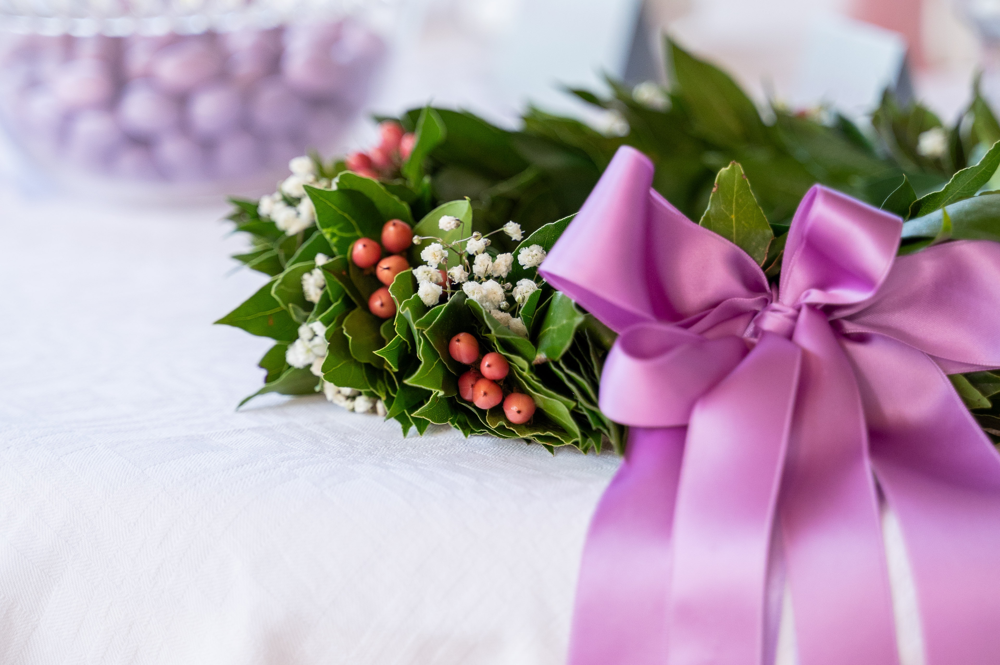
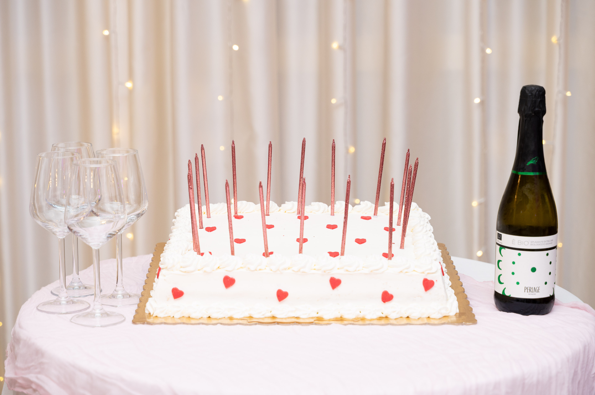

Matrimoni
Foto e video per raccontare la vostra giornata, dai preparativi al ricevimento.
Parliamo del vostro matrimonioFotografo e videomaker in Abruzzo
Racconto persone, eventi e progetti con immagini e video curati, dalla prima idea alla consegna.
Ogni servizio può includere foto, video o entrambi, secondo le tue esigenze.
Foto e video per raccontare la vostra giornata, dai preparativi al ricevimento.
Parliamo del vostro matrimonio
Foto e video per eventi, atleti e squadre, dentro e fuori dal campo.
Raccontami il progetto sportivo
Foto, video e contenuti per raccontare la tua attività, i tuoi prodotti e i tuoi progetti.
Parliamo della tua attività



Sono Vincenzo, fotografo e videomaker a Roccascalegna. Racconto persone, momenti e progetti attraverso immagini e video, con uno sguardo attento alla luce, ai dettagli e alle emozioni.
Lavoro con un approccio semplice e diretto: ascolto la tua idea, la trasformo in un progetto e la realizzo con cura, dalla prima fase alla consegna.
Se cerchi foto o video per un evento, un’attività o un progetto personale, possiamo costruirlo insieme.
Tre passaggi chiari, dalla prima idea alla consegna.
Mi racconti cosa ti serve, dove e quando.
Definiamo contenuti, tempi e costi.
Realizzazione e consegna secondo quanto concordato.
Pronto a raccontare il tuo progetto?
Richiedi un preventivoHo base a Roccascalegna, in Abruzzo. Indicami il luogo del servizio per verificare disponibilità e trasferte.
Scrivi a foto.vincenzodd@gmail.com indicando servizio, luogo ed eventuale data.
Sì. Valutiamo insieme copertura e organizzazione in base al progetto.
Dipendono dal servizio e dalla post-produzione. Li concordiamo prima di iniziare.
Hai un progetto, un evento o un’attività da raccontare? Scrivimi: valutiamo insieme le tue esigenze.
Richiedi un preventivo